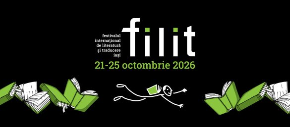
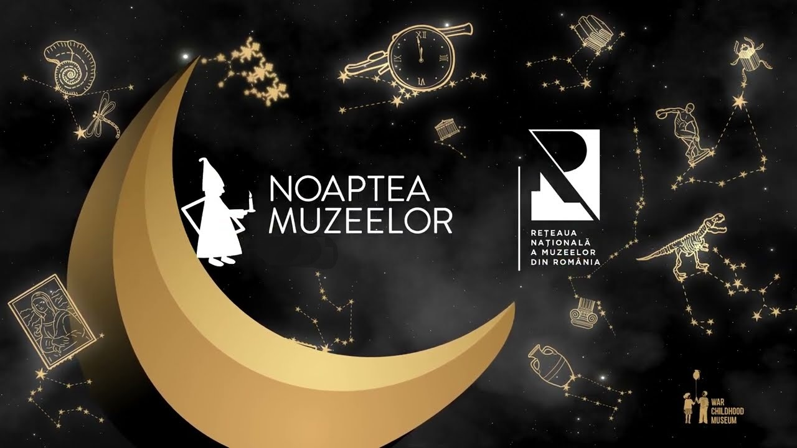
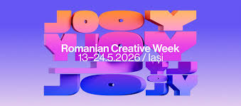
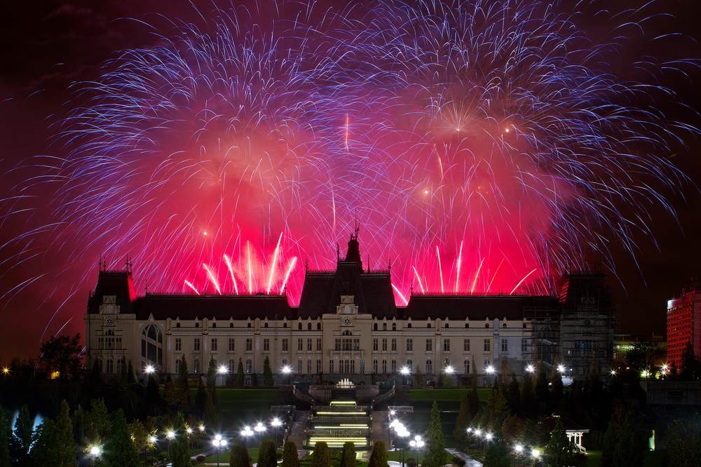
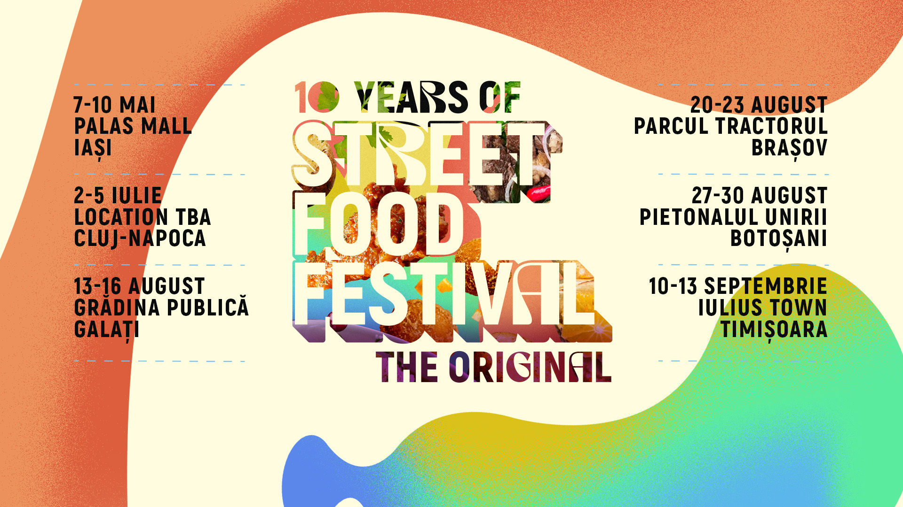
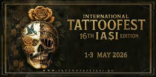
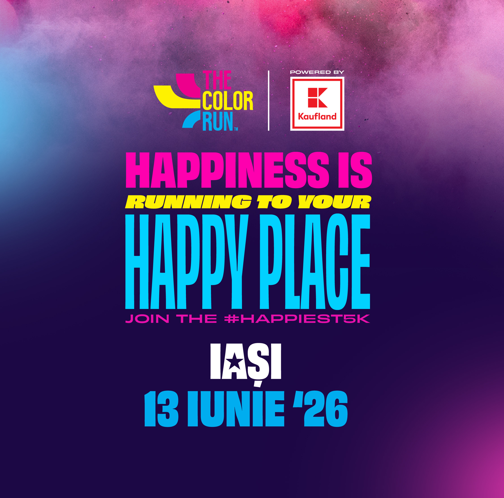

FILIT Iași 2026
Period: October
The largest festival of its kind in Eastern Europe. It brings together hundreds of writers, translators, and international artists. You can enjoy public readings, debates, and white nights of poetry.
View details
Night of Museums 2026
Period: May
Visit the most iconic museums in Iași for free, from the Palace of Culture to Creangă's Bojdeuca, in an extended program full of surprises.
View details
Romanian Creative Week 2026
Period: May
The most important event for creative industries in Romania. It includes dozens of fashion shows in the Palas Garden, design exhibitions, concerts, and architecture competitions.
View details
Iași City Days 2026
Period: October
The celebration of Iași city. It includes a rich cultural program, concerts with renowned artists, craft fairs, and the traditional fireworks display at the end of the celebration.
View details
Rock'N'Iași 2026
Period: October
The soul festival of the rock community in Iași. The event promotes both young, emerging bands and legends of rock and metal music. The atmosphere is one of freedom, energy, and passion for live music.
View details
Street Food Festival Iași 2026
Period: May
An unforgettable culinary experience in the heart of the city. The festival brings together dozens of international cuisines, live music, and a relaxed picnic atmosphere, transforming the Palas Garden into a foodie's paradise.
View details
International TattooFest Iași 2026
Period: May
A celebration of body art and alternative culture. The event brings together hundreds of tattoo artists from around the world, profile competitions, live rock concerts, and unconventional art exhibitions.
View details
The Color Run Iași 2026
Period: June
It's not a race against the clock, but a celebration of health and joy. Participants cover 5 kilometers and are bombarded with colored powder at every kilometer, finishing the race in a festival of music and color explosions.
View details